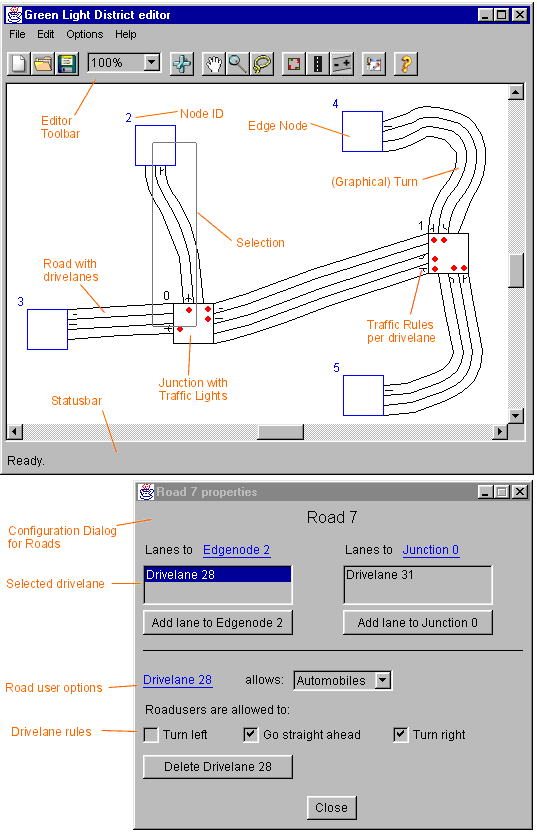

1. Editor
 a. Interface
a. Interface
 b. Usage
b. Usage
 c. From maps to sims
c. From maps to sims
2. Simulator
3. Evaluation Tools
4. An Example Session
5. Algorithms
Editor
The Editor is the place to start exploring GLD's creative capabilities. The Editor window is the part of the program in which maps can be created, saved, loaded, and modified.
Map creation is the process of placing nodes, and linking them with roads to form a valid infrastructure. Afterwards, the number of lanes on roads, algorithms for the traffic lights and starting frequencies for road users can be set. Road users and traffic light changes are not visible in the Editor, only in the Simulator.
In the Interface section of the Editor the basics of control are laid out, and in the Use section a detailed description of map editing is given.
